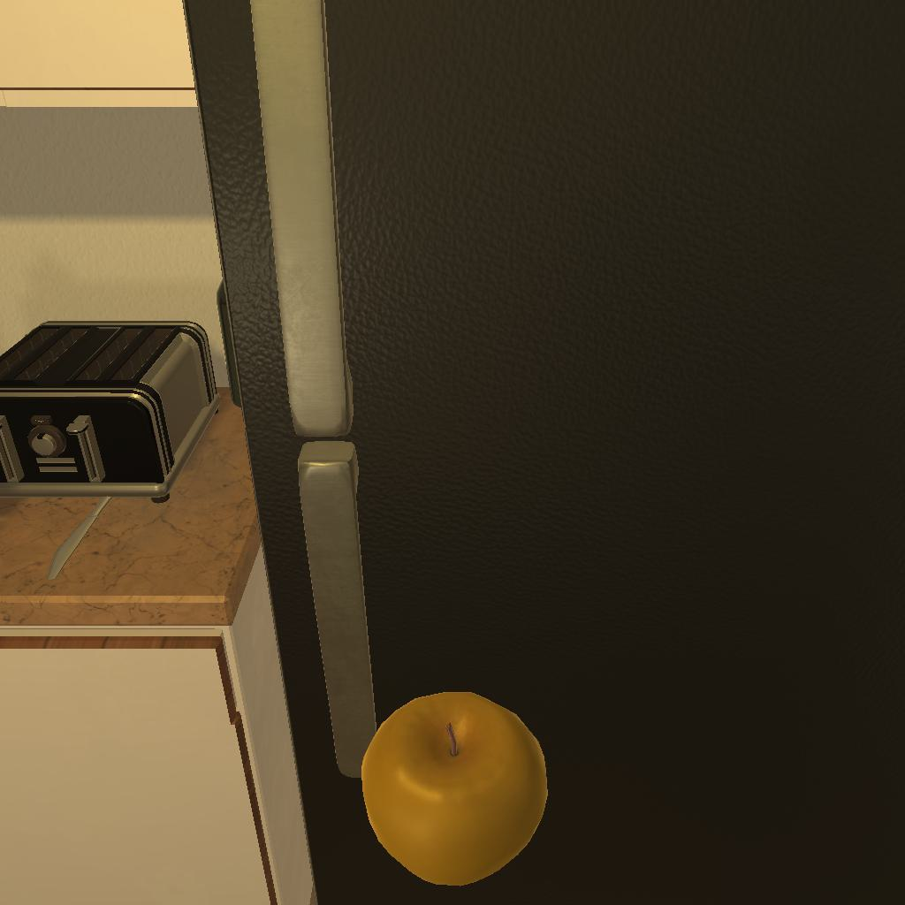

---------------------------------------------------------task: 14---------------------------------------------------------
--------------------------------------------------------------------------------------------------------------------------------------------------------------------
--------------------------------------------------------------------------------------------------------------------------------------------------------------------
Step:--------------------------------------------------------------------------19-------------------------------------------------------------------------------
----------------------------------------
VLM Prompt:
Image1:
Image2:
Image3:
**Instruction**
1. Analyze the provided images to identify all visible household objects and compare the difference between images (e.h. whether the object is opened or not and taken on hand or not), focusing on those relevant to the task description "put a cool apple in countertop."
2. Use the analysis of images and the task hint "The agent must find an object of the desired type, pick it up, go to a fridge, cool the object with the fridge, then find the correct location to place it, and put it down there. The agent does not need to use the fridge button or open the fridge to cool the object, and the agent just needs to do action that is "cool the object with the fridge"." to answer the question: what is the most reasonable action in the choices for the task description "put a cool apple in countertop"?
3. Decide and write the answer using the template: The answer is: (i): , where i is the real number. If there is no desired object in images, search every place based on **Initial Observation** to find the object. And if no one is exactly correct, choose a similar answer.
**Initial Observation**
You are in the middle of a room. Looking quickly around you, you can see microwave (1), countertop (1-2), cabinet (1-11), diningtable (1), drawer (1-3), sink (1), sinkbasin (1), toaster (1), stoveburner (1-4), fridge (1), coffeemachine (1), garbagecan (1)
**Answer Choices**
(1): go to microwave 1
(2): go to countertop 1
(3): go to cabinet 1
(4): go to diningtable 1
(5): go to drawer 1
(6): go to sink 1
(7): go to cabinet 2
(8): go to cabinet 3
(9): go to sinkbasin 1
(10): go to cabinet 4
(11): go to cabinet 5
(12): go to drawer 2
(13): go to countertop 2
(14): go to toaster 1
(15): go to cabinet 6
(16): go to stoveburner 1
(17): go to cabinet 7
(18): go to stoveburner 2
(19): go to stoveburner 3
(20): go to stoveburner 4
(21): go to drawer 3
(22): go to cabinet 8
(23): go to cabinet 9
(24): go to cabinet 10
(25): go to coffeemachine 1
(26): go to cabinet 11
(27): go to garbagecan 1
(28): open fridge 1
(29): close fridge 1
(30): put apple 1 in/on fridge 1
(31): examine apple 1
(32): examine fridge 1
**Answer**
Let's think step by step by following the instructions.
----------------------------------------
----------------------------------------
Original Response:
Firstly, analyzing the images, we can see a red microwave and a yellow apple on the countertop in Image1. In Image2 and Image3, we see the same scene from a different angle with the fridge on the left. The apple remains on the countertop, and the fridge appears to be closed in both images.
Based on the initial observation, the task requires finding an apple, cooling it with the fridge, and then placing it on the countertop. Since the apple is already visible on the countertop, there is no need to search every place to find it.
According to the task hint, the agent doesn't need to use the fridge button or open the fridge to cool the object. Hence, actions like "open fridge 1" or "close fridge 1" are not required. The most reasonable action to follow the task description "put a cool apple in countertop" would be to cool the apple with the fridge and then put it back on the countertop. However, the action of cooling the apple with the fridge (without opening it) is not explicitly given in the answer choices.
Given that the apple is already on the countertop and there is no action to "cool the object with the fridge," the next best action would be to leave the apple where it is since it is the final desired location according to the task description. Therefore, the most reasonable action from the given choices would be to go to the countertop where the apple is already placed.
The answer is: (13): go to countertop 2
----------------------------------------
----------------------------------------
>>> Refine Original VLM Response and Get Pure Action: go to countertop 2
----------------------------------------
-----------------------------------------------------------------
Running time: 31.719388008117676 seconds
Total Money: 8.352640000000006
-----------------------------------------------------------------
-----------------------------------------------------------------
Text Observation:You arrive at loc 12. On the countertop 2, you see a pan 1, a winebottle 2, a winebottle 1, a saltshaker 1, a stoveknob 1, a stoveknob 2, and a butterknife 1.
-----------------------------------------------------------------
UNSUCCEED